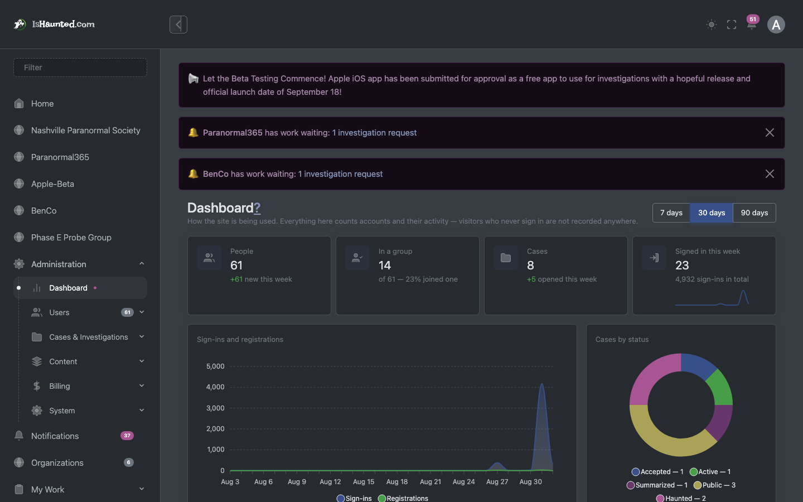
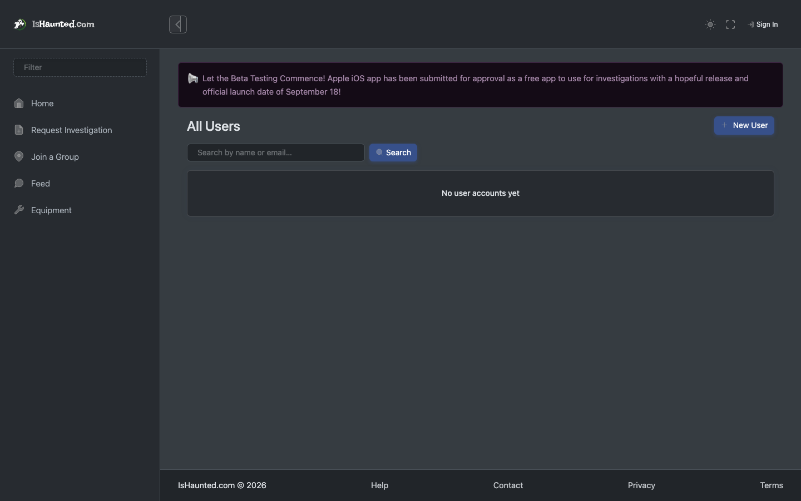
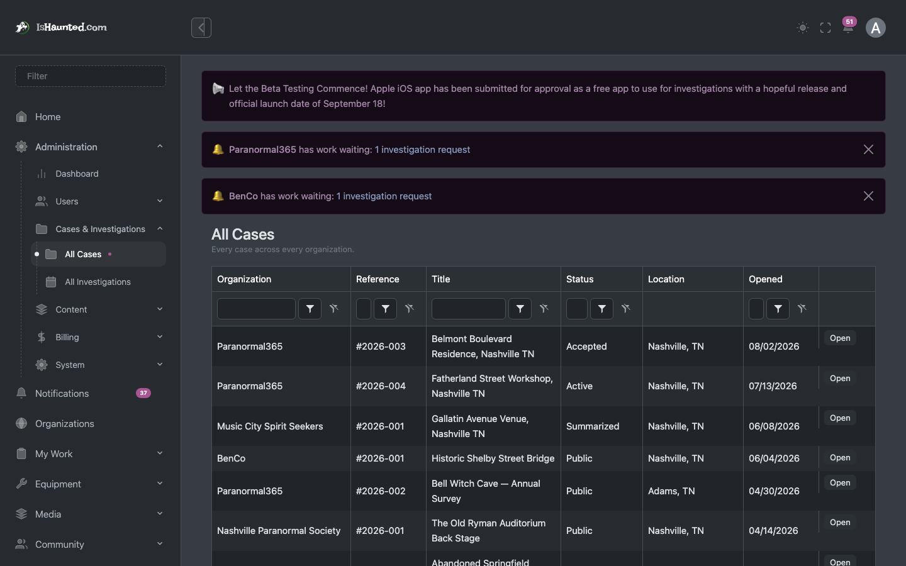
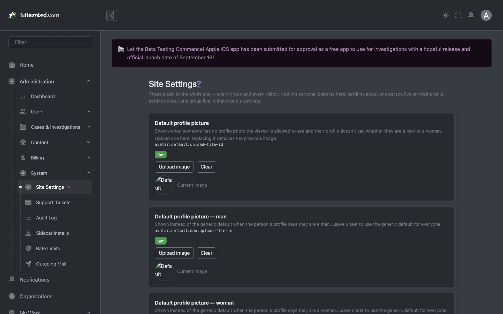
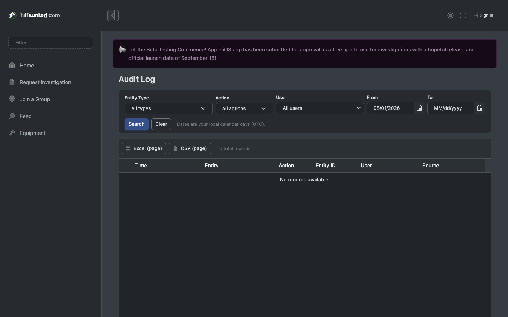
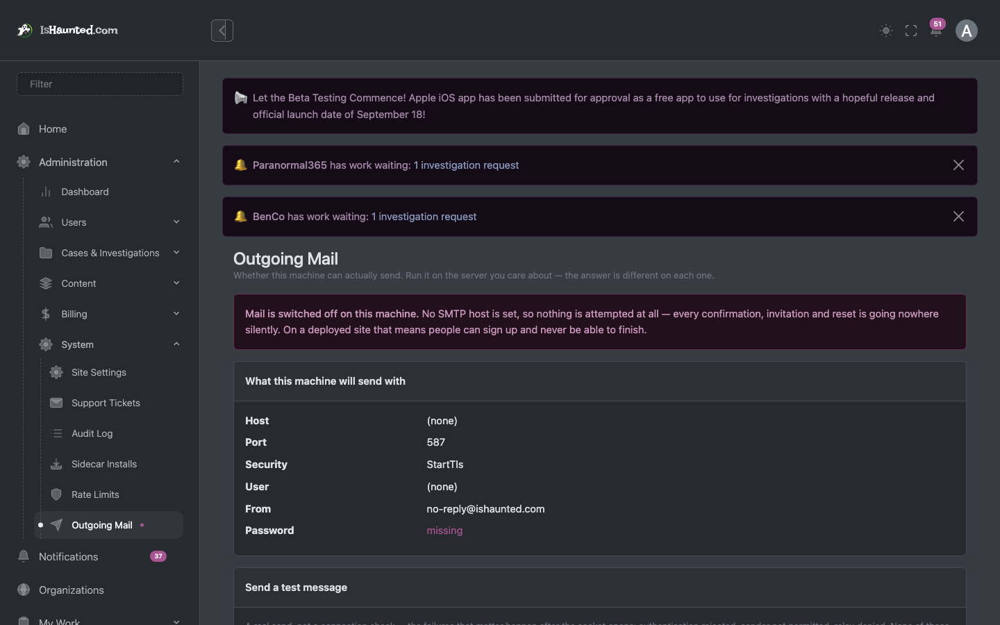
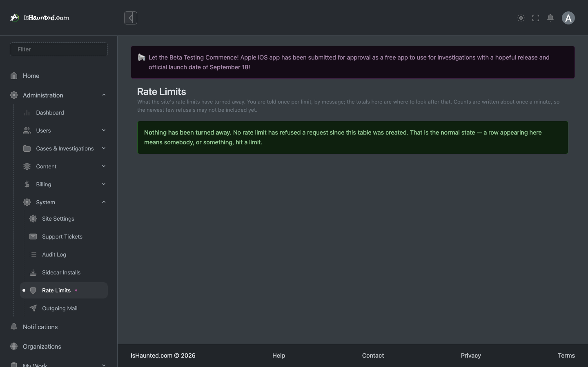
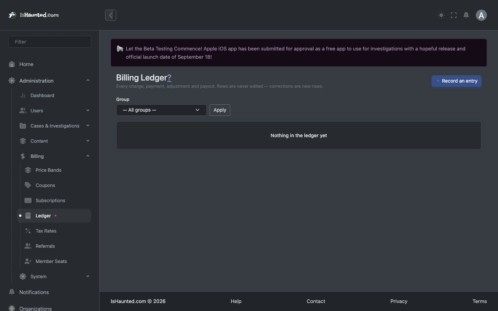
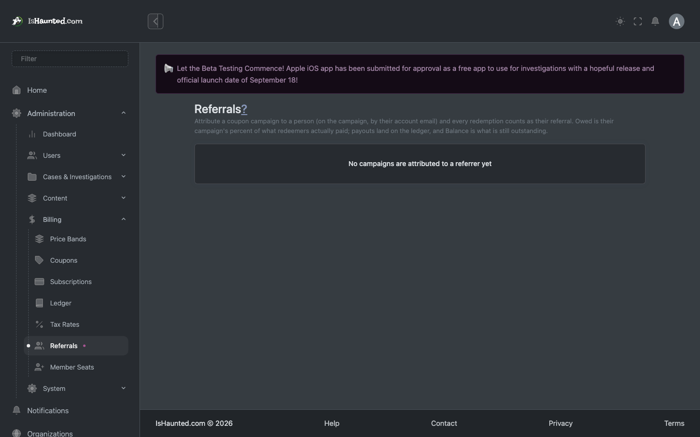
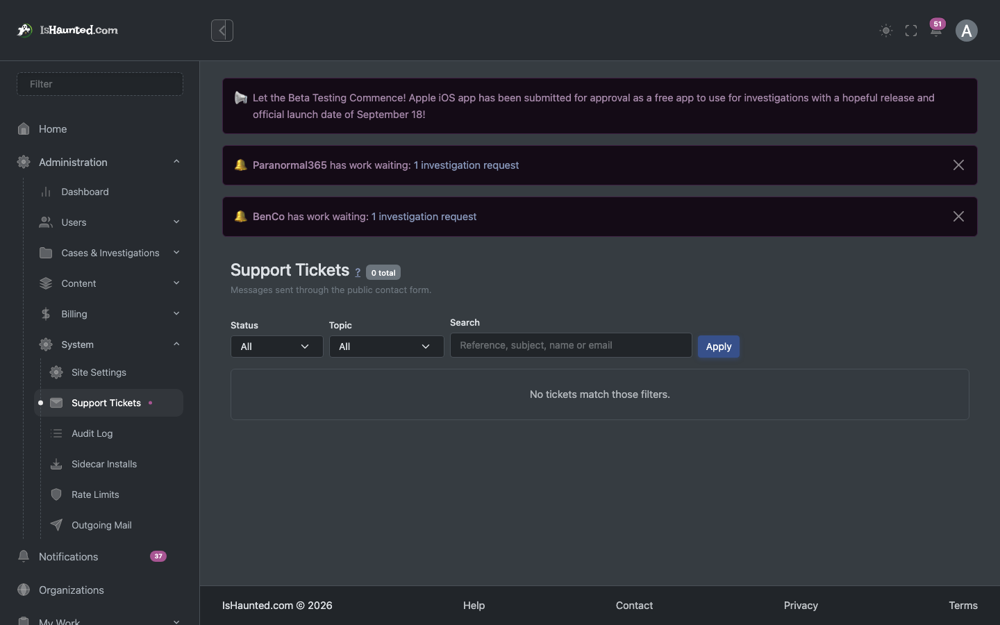

Runs the platform itself. Passes every permission check, everywhere. Written for a developer joining the project.
Every screenshot shows simulated, seeded data, captured in dark mode while signed in as this user type. Nothing here is a real person, case or investigation. Where a page shows a refusal, that is the designed behaviour for this seat.
The SuperAdmin operates the site rather than using it: people, groups, taxonomies, billing, moderation, and the diagnostics that say whether the platform is healthy.
Two of these screens exist because something went wrong and could not be seen. Outgoing Mail exists because a real sign-up produced no email and nothing anywhere recorded it — a failure that is invisible from every other surface, since the account exists and the site is up. Rate limits and the audit log are the same idea: the platform explaining itself rather than requiring somebody to read the database.
Two things gate every surface, and they are different questions:
Your seat in a group — owner, administrator, member, viewer — answers "may this person do this?". The group's plan answers "does this group pay for this at all?". A member of a group whose plan excludes an area is refused for a completely different reason than a viewer who is not allowed to write, and the site says which.
A refusal is never rendered as "nothing here." An empty list and a server
saying no are different facts, and a page that shows the same grey nothing for both teaches people
to distrust it. Every list goes through LoadResult, which carries loading, empty,
refused, session-ended and rate-limited as distinct states — and every one of them has its own
words on screen.
This matters when reading this document: where a screenshot shows a refusal, that is the designed behaviour for this seat, not a broken page.
Dashboard. How the site is being used. Counts accounts and their activity — visitors who never sign in are not recorded anywhere, and it says so.

Users. Every account. The Verified column distinguishes confirmed, link-sent-not-used, and never-emailed.

Admin cases. Every case on the platform.

Site settings. Feature flags, announcements, and what the site offers at all.

Audit log. Who changed what, when. Filtered and paged on the server.

Outgoing mail. Whether this machine can actually send email, and a real test send.

Rate limits. What the site's limits have turned away.

Billing ledger. The money trail, append-only.

Referrals. Referral standings and what they earn.

Support tickets. The support queue.
